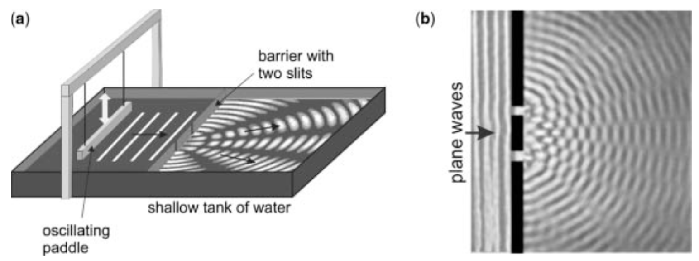

对光的认识
对光的认识
最近在读《EXPLORING QUANTUM PHYSICS THROUGH HANDS-ON PROJECTS》。这本书从具体的实验入手，介绍量子力学中的一些重要概念。比较适合工程师阅读。
本文摘译了第一章《LIGHT AS A WAVE》的部分内容，即物理学发展历史上的各个时期对光的认识。从中我们可以看到，生产力的发展推动了物理实验的精确化，从而对理论物理产生重大影响。
牛顿的观点
1704年，艾萨克·牛顿爵士提出，光由质量小的粒子组成。在他看来，这可以解释反射，因为一个有弹性、无摩擦的球在光滑的表面上反弹，就像光在镜子上反弹一样--也就是说，入射角等于反射角。
请记住，牛顿对质量通过引力相互吸引的方式非常感兴趣。在他看来，这种力量是造成空气和水之间边界折射的原因。
牛顿想象，物质是由某种颗粒组成的，而空气中这些颗粒的密度要比水低。这与我们今天所知道的相差无几--我们将牛顿的粒子称为 "分子 "和 "原子"。牛顿随后提出，在光粒子和物质粒子之间会有一种类似于重力的吸引力。
现在，考虑当一个光粒子在空气或水等介质中旅行，它的周围都被相同数量的物质粒子所包围。牛顿解释说，作用在光粒子上的吸引力将相互抵消，使光以直线方式传播。然而，在空气和水的边界附近，鉴于水的 "物质粒子 "密度较高，光粒子会感到被水吸引的程度大于空气。牛顿提出，当光粒子进入水中时，它经历了一个对水的吸引力，这增加了光粒子在水的方向上的速度分量，但在与水平行的方向上却没有。
这种垂直于空气-水边界方向的速度增加会使光偏转到更接近垂直于水面的方向，这正是实验中观察到的情况。因此，牛顿声称，光粒子的速度在不同的透明材料中是不同的，他认为光在水中的传播速度比在空气中快。(我们现在知道情况并非如此，但我们一会儿就会说到这一点）。
牛顿并没有把重力等同于物质粒子和光粒子之间的吸引力。他需要这个力对所有穿过两种材料之间的边界的光粒子来说是相等的，以解释棱镜如何将白光分离成彩虹的颜色。牛顿提出，光粒子的质量取决于其颜色。在他看来，红色的光粒子比紫色的光粒子质量更大。由于它们的惯性增加，因此红色光粒子在穿越材料之间的边界时，会被偏离得更少。
牛顿的伟大赋予了他的理论以可信度，但这并不是周围唯一的理论。
荷兰物理学家克里斯蒂安-惠更斯（Christiaan Huygens）提出了一个更早的竞争性理论：光由波组成。观察到两束相交的光并没有像预期的那样，作为粒子而相互反弹，这一点得到了支持。然而，惠更斯无法解释颜色，关于光的性质的波与粒子的辩论一直持续到19世纪进行的决定性实验。
双缝干涉
1801年左右，托马斯-杨发现了光的干涉。这种现象只有在波的情况下才可能出现，为光是一种波提供了确凿的证据。在杨的实验中，通过两个独立的狭缝发送的光会产生一种图案，这种图案与水波干涉产生的图案非常相似。

图1 来自两个来源的水波相互干扰，形成一个特征图案：（a）波纹水箱是一个浅玻璃水箱，用来演示波的基本特性。在其中，一个摇动的桨产生的波向一个有两个狭缝的屏障移动。(b) 平面波撞击两个狭窄的缝隙，每个缝隙都会产生超出屏障的圆形波，结果就是干涉模式。
在我们继续重现杨氏关于光的干涉的实验之前，让我们花一些时间来做水波的实验。首先用一个玻璃烤盘、一些木头、两根橡皮筋和一个为传呼机和手机制作的振动马达，建造一个波纹水箱，如图2所示。

图2 在我们自制的波纹槽中，一个木头支架支撑着一个玻璃烤盘，离一张白纸有一段距离。(a) 用一束光从上面照过来，锅里的浅水层上的波纹被投射到纸上，形成阴影。(b) 一个小的振动电机连接到一个悬挂的梁上，正好接触到水面，产生平面波，我们可以用它来进行波的反射、折射和干涉实验。为了清晰起见，这些图片没有显示我们用来吸收水箱壁上的反射的钢丝绒垫子。
观察浅水层中的波浪，最好是从上面进行照明，将阴影透过玻璃底投射到水箱下面50厘米的白纸上。使用聚光灯，而不是泛光灯进行照明，将海浪 "冻结 "在原地。在锅里装满水，深度约为5毫米，然后在水箱的边缘装上几块金属海绵，以减少锅壁上不必要的波浪反射。通过调暗房间的灯光和用铅笔轻轻地浸入水中以产生波纹来测试这个装置。
为了产生连续的平面波，将振动马达固定在木梁上。用橡皮筋将木梁悬挂在支撑梁上，并调整振动木梁的高度，使其刚好接触到水面。通过一个100Ω的电位器，用1.5V的D型电池为电机供电。
接下来，沿着与振动梁平行的线，设置两个直的障碍物，它们之间有一个短的障碍物。使障碍物之间的空隙约为1厘米宽。转动电位器以产生波长约为1厘米的直波。尝试不同的狭缝之间的分离，看看你的数据是否与方程式一致：
$$ d = \frac{\lambda r}{s} $$
其中d是条纹的间隔（例如，中心条纹和它旁边的第一个条纹之间的间隔），λ是波长，s是狭缝之间的距离，r是双缝屏障到观察到条纹的地方的距离。
托马斯-杨用彩光而不是水波做了基本相同的事情。我们将使用廉价的激光指示器和一个简单的双缝来复制杨为支持光的波性理论而进行的实验（图3）。在一个不透明的背景上有清晰的孔径。双缝分离的宽度从45到100微米不等。光栅为25、50和100线/毫米。

图3 杨氏实验的现代版本，证明了光的波动性。(a) 只需要一个便宜的激光指示器和一个有两个狭缝的幻灯片。(b) 根据d = λr/s，条纹之间的间隔与狭缝之间的距离有关。(c) 厚度为s的细丝产生的干涉图案与相同间距的双狭缝相同。
国内B站的双缝干涉实验更为简单：在用蜡烛熏黑的玻璃板上划出划痕，用激光照射划痕。


但是这种简易的实验设计不利于从数值上发现规律。
有趣的是，杨发现，条纹之间的间隔与狭缝之间的距离完全通过与水类似的相同的方程式相关。
其中s是狭缝之间的距离，λ是光的波长，d是条纹之间的距离（中心最大值和其边上的第一个明亮条纹之间的距离），r是狭缝到屏幕的距离。
对于IF-508衍射马赛克中标记为 "25×25 "的双缝，s=45μm。使用红色、绿色和紫色的激光指示器，r=1米，我们测量了表1中所示的条纹分离度。

测量的条纹间距和计算出的值之间的偏差是由于我们对每个条纹中心的估计值不够精确。通过重复测量和平均，可以获得更好的精度。自己尝试一下这个和IF-508幻灯片中提供的其他狭缝分离（s=5.8、7.5和10μm），看看波动模型对光的行为的解释有多好。
请注意，d = λr/s不依赖于狭缝的宽度，只依赖于两个狭缝的间距。有趣的是，这个方程在没有狭缝的情况下也适用。如果在黑暗的房间里用激光笔照射人的头发，可以通过使s等于头发的直径来计算干涉条纹之间的间隔d。用激光笔照射头发，测量干涉条纹之间的距离。尝试计算头发的宽度--你应该得出大约50到150微米的厚度。试着记住这一点，因为双缝干涉模式和使用非常薄的灯丝得到的干涉模式之间的等效性，在我们以后进行的暴露量子效应的实验中会变得非常重要。
推翻牛顿的解释
衍射、反射和颜色也可以用杨的波浪理论来解释。然而，干涉是波的名片，所以杨的实验使19世纪初的许多人相信，光确实是一种波。尽管如此，牛顿的声望是如此之高，以至于他的光的粒子模型一直保留着追随者，直到1850年，法国物理学家让-福柯提供了最终的、决定性的证据，证明牛顿的光的粒子理论一定是错误的。还记得牛顿的理论要求光的速度在水中比在空气中高吗？那么，福柯在实验中显示了完全相反的情况。如图7所示，福柯用一个蒸汽轮机以800rps的速度旋转一个镜子。他将一束光从旋转的镜子上反弹下来；然后这束光被9米外的一个固定的镜子反射。当光返回到旋转镜时，镜子已经旋转了一点，导致光从光源处偏转了一定的距离。

图4 1850年，让-福柯用这个装置来测量光在（a）空气和（b）水中的速度。他发现，光在水中的传播速度比在空气中慢，这与牛顿的光粒子理论的预测相反。
然后，福柯在镜子之间的光路上放置了一个装满水的管子，上面有透明的窗户。如果像牛顿所肯定的那样，光在水中的传播速度比在空气中快，那么偏转角就会更小，光束就会更接近光源。†相反，福柯发现在光路中引入水会进一步延迟光束，这表明光在水中的传播速度比在空气中更慢，与牛顿的光粒子理论的预测相反。
电磁波
后来，在19世纪60年代，苏格兰物理学家詹姆斯-克拉克-麦克斯韦确定光是一种电磁波。麦克斯韦得出了电和磁方程的波形，揭示了电场和磁场随时间变化的波状性质。
麦克斯韦发现，一个沿空间变化的电场会产生一个随时间变化的磁场，反之亦然。因此，当一个振荡电场产生一个振荡磁场时，磁场反过来又产生一个振荡电场，如此反复。这些振荡场共同形成了图5所示的电磁波。电磁波在空间传播的方式由其波长λ描述，而其在时间上的振荡则由波的频率描述。频率f和波长通过c = λ f相关，其中c是光速。

图5 一个振荡的电场产生一个振荡的磁场；磁场又产生一个振荡的电场，以此类推。这些振荡场共同形成一个波长为λ的电磁波，以光速c传播。
由于麦克斯韦的波动方程所预测的电磁波的速度与测量的光速相吻合，麦克斯韦得出结论，光本身必须是一种电磁波。这一事实后来由海因里希-赫兹在1887年通过实验证实。今天，我们使用所有波长的电磁波谱--从我们用来传输交流电的巨大长波，到作为我们无线社会基础的无线电波长，再到伽马辐射的极短波长（图6）。

图6 电磁波谱。麦克斯韦得出结论，光本身必须是一种电磁波。这一事实后来被赫兹在1887年通过实验证实。
极化
极化是麦克斯韦的电磁理论最终能够解释的光的一个重要特性。注意在图8中，电场被显示为在一个平面上振荡，而磁场则在一个垂直的平面上振荡。波沿着这些平面的交叉点所形成的线传播。该图中所示的电磁波被称为 "垂直极化"，因为在我们选择的参考框架中，电场是垂直振荡的。
来自大多数自然源的光包含有电场围绕其行进方向以随机角度定向的波。通过使用一个偏振器，可以从随机偏振的光中获得一个特定偏振的波。
一个偏振器可以由非常细的金属线阵列组成，它们彼此平行排列。金属线为平行于金属线的电场提供了高导电性，本质上是 "缩短它们 "并产生热量。由于导线之间的非导电空间，没有电流可以垂直地流向它们。因此，垂直于电线的电场可以不受阻碍地通过。换句话说，当电线网格被放置在随机极化的光束中时，它耗尽了电场的一个分量的能量，而让其垂直分量通过，完全没有衰减。因此，从偏振器出来的光有一个电场，在垂直于电线的方向上振动。
尽管线栅式偏振器很容易理解，但它只在某些频率下有用，因为导线必须相隔一小部分波长。对于短波长，如可见光的波长，这是很难做到的，而且成本很高。1938年，E.H.Land发明了H-Polaroid片，它是线栅的化学版本。它使用含有许多碘原子的细长聚乙烯醇分子，而不是细长的电线。这些长而直的分子几乎完全平行地排列在一起。由于碘原子提供的导电性，平行于分子的电振动分量被吸收了。而垂直于分子的分量则几乎不被吸收而继续通过。
正如你在本书中所看到的，在进行量子物理实验时，理解极化是非常重要的，所以我们希望你能对波的这一有趣属性有一个直观的感受。